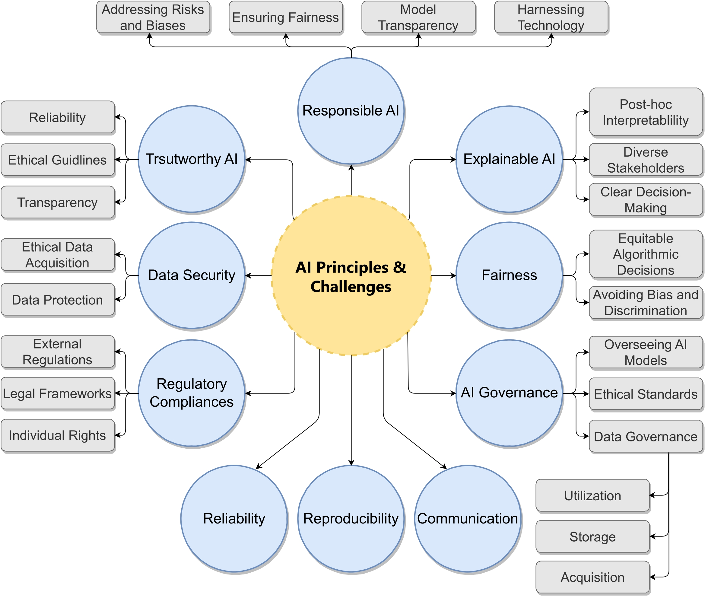
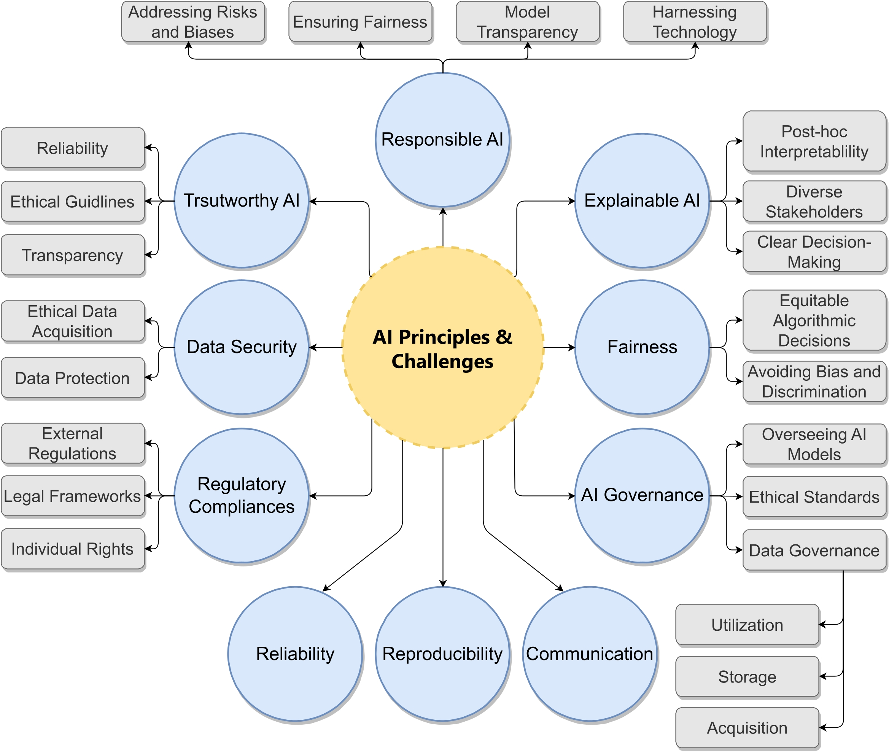

Interpretable Social Behavior Analysis
While the deep learning models offer rich contextual insights, their blackbox nature limits interpretability and overlooks user-specific stylistic patterns. I developed a novel interpretable handcrafted feature representation to capture users' distinct domain-specific emotional cues from social media microblogs. By employing genetic algorithmic approach, I extracted and combined three user-specific interpretable features: Stylistic (S), Sentiment (SE), and Linguistic(L). Furthermore, I extended this work by fusing the interpretable handcrafted representation with rich and contextual LLM-driven latent deep features. This bi-modal architecture utilizes the complementary strengths of diverse feature groups, improving accuracy and interpretability.


Trustworthy and Explainable AI
I examined trust, fairness, bias, and explainability in AI-driven social media data mining, with a focus on how biases introduced during data curation, processing, and modeling distort predictions and undermine user trust. I proposed mitigation strategies centered on diverse data curation, transparency-oriented datasheets, and qualitative bias analysis. Building on this work, I developed a Trustworthy AI (TXAI) framework that integrates affective, personality, and social signals through a weighted trust assessment mechanism to support ethical and explainable decision-making. Through interdisciplinary collaboration, my research advances practical guidelines for responsible AI deployment, governance, and bias-aware evaluation across AI workflows.
- Trustworthy and Responsible AI for Human-Centric Autonomous Decision-Making Systems
- FairHealthGrid: A Systematic Framework for Evaluating Bias Mitigation Strategies in Healthcare Machine Learning
- A Comprehensive Review of Trustworthy, Ethical, and Explainable Computer Vision Advancements in Online Social Media
- Biases, Fairness, and Implications of Using AI in Social Media Data Mining
- A Multifaceted Role of Biometrics in Online Security, Privacy, and Trustworthy Decision Making
 

XAI for Mental Health and Well-being
My research explores Canadians' perception of trust in AI for healthcare, using LLM-driven opinion mining to uncover public concerns and trust factors. Additionally, my ongoing research investigates how users' emotional, personality, and linguistic attributes extracted from social media mental health discussions, can be leveraged to identify diverse root causes of mental health issues and develop XAI framework to provide personalized and transparent policy recommendations. This work aims to bridge AI and psychology for ethical, explainable, and user-centered mental health support.